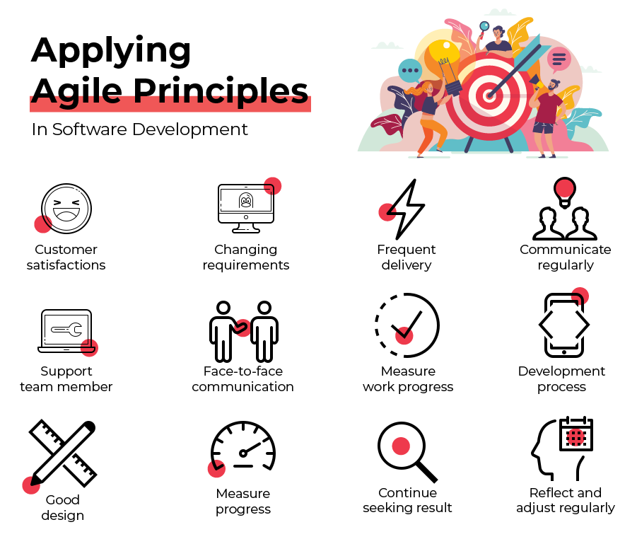

The 12 Principles of Agile Development
By Kaleb Dean
-
Ensuring customer satisfaction through continuous and early delivery of impactful software is the highest priority.
Customers will typically have an idea of how they want their software product to function and/or look but never all of the details. Giving the customer functional software in segments throughout the development process allows them to give feedback and change requirements if the project is not going in a direction they like. Although it may seem like a bad thing, this allows the team to make changes on portions of software rather than the entire finished result of the project. This also allows the customer to see progress, which is vitally important to keeping them happy.
-
Accept and welcome changes in requirements at any stage of development, even the later stages. Agile processes improve the customer’s competitive advantage by using change.
Changes in requirements can occur for a variety of reasons. The customer could have a change in specific needs the software product will fulfill. The users may need more functionality or a simpler design. The current requirements may not be possible to deliver on considering the time and cost constraints. As an agile team leader, you must be able to adapt to changing requirements as they can come at any time in the development process. You must also be able to quickly relay changes in requirements to your team and redesign the project.
-
Deliver software that is functional quickly and often.
Time frames vary from a couple of weeks to several months. Shorter time frames are typically preferred over longer ones. Software deliverables must be able to function on their own within their given timeframe. This allows for feedback from sponsors, as mentioned earlier. Continuous deployment also provides time for users to give feedback.
-
Business professionals as well as developers must work together on a daily basis over the course of the project’s development.
As an agile team leader, it is your job to be the bridge between the business and technical personnel involved in the project. This means being able to understand and sometimes assist with development. You must also be able to communicate technical information such as issues, progress, etc with business professionals. You must also be able to communicate business needs and causes for changes in requirements to your team. Being able to bridge the gap in technical vs. business knowledge is your most vital task.
-
Projects must be built around motivated people. Agile team leads should provide the environment and support necessary to accomplish their tasks. Leads must also trust their team members to execute quality work.
Your team members are the lifeblood of your project. Without an environment that motivates them and gives them space to get work done, how can you expect them to remain effective? This is where your previously mentioned communication skills come in. You have the power to tell business professionals what is necessary to build an environment that allows your team to execute the project. You can also manage burnout as this leads to a lack of motivation and therefore a harder time getting work done.
-
Face to face conversation is consistently the best way to convey information and communicate within a development team.
Although we live in the 21st century with phones and video calling technology, face to face is hands down the most effective communication method between agile teams. You are more effectively able to solve problems because of the ability to collaborate on a white board or using one person’s computer to debug. Additionally, many things that make face to face communication so effective, like body language, are lost even over video meetings. Face to face is the best way to make sure everyone is on the same page and resolve disagreements shoudl they arise.
-
Software that is functional is the main measure of progress.
Agile methodology focuses on delivering working chunks of software. While you can use other metrics to measure progress, functional software will show you, your team, and the customer how much has been completed and how much work is left to be done. Developed and tested software must be delivered in order to get customer and user feedback which is why there is such an emphasis on delivering functional software. Users cannot provide valuable feedback on something that does not work.
-
Agile makes the development process sustainable. The sponsors, developers, and users should theoretically be able to maintain their pace indefinitely.
If you find yourself or your team members burning out or pleading for the relief of being finished with the project, you are not executing agile effectively. You must spread the workload out in a way that is reasonable for your team, the sponsors, and yourself. While there is an expected delivery date for the final product, changes can occur at any time that can push that date further into the future. The environment and workload for agile must be set up in a way that is manageable for everyone involved.
-
Agility is enhanced by repeated attention to technical excellence and good design.
You will save a lot of time if you focus a lot of attention on good design. Additionally, your project should be designed in a way that allows for changes in requirements in the future. Technical excellence will help cut down on errors in the future which will also save time for both you and your team.
-
Simplicity – doing as little work as possible to accomplish a task effectively – is a must in agile development environments.
-
Teams that self-organize often create the best architectures, designs, and requirements.
Self-organized teams are able to create the best architectures, designs, and requirements because they are intimately familiar with the technical and non-technical details of the project. Good architecture stems from good requirements. Good requirements originate from people with a deep understanding of both the problem they are attempting to solve as well as the current capabilities of the technology they are using. Good designs come from people who are passionate about what they are working on and having the freedom to execute however they want.
-
The team regularly reflects on their current effectiveness and how to improve in the future. The team then adjusts its practices according to the results of reflection.
When you reflect on the prior sprint with your team, you should discuss any challenges in communication, workload, and the environment that may be preventing your team from reaching its full potential on the project. You should also elaborate on what things your team is doing well to execute effectively. These reflections are also a chance to congratulate your team members and truly make them feel appreciated. However, simply reflecting is not enough to remain effective. The team must be willing to implement changes found throughout the reflection process. Being adaptable to change is what makes agile teams thrive.